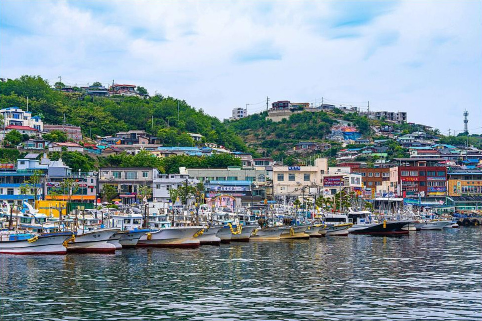
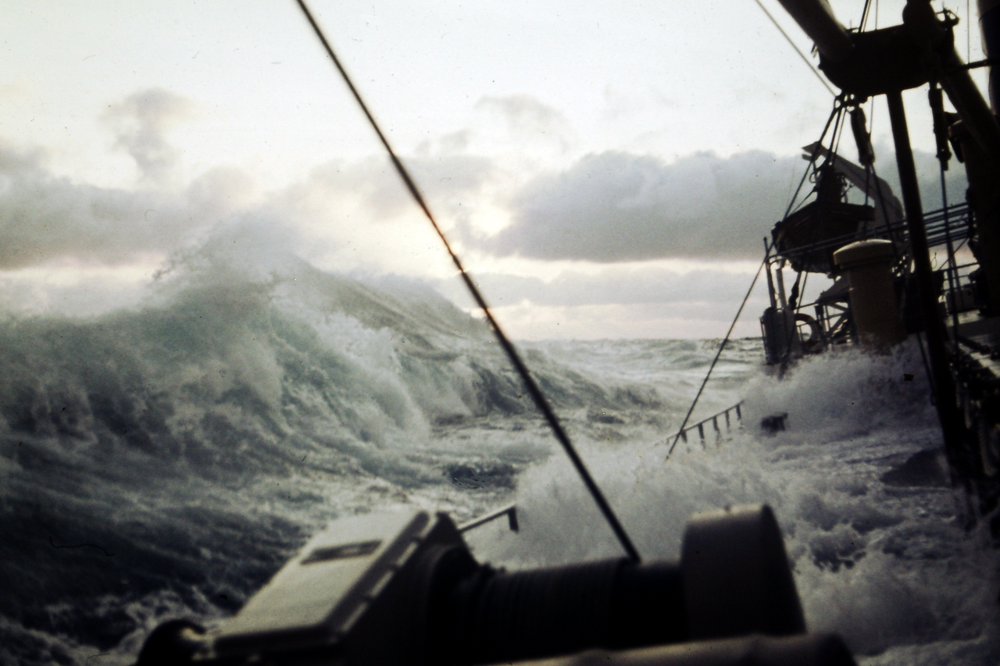
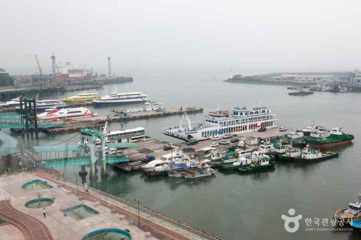
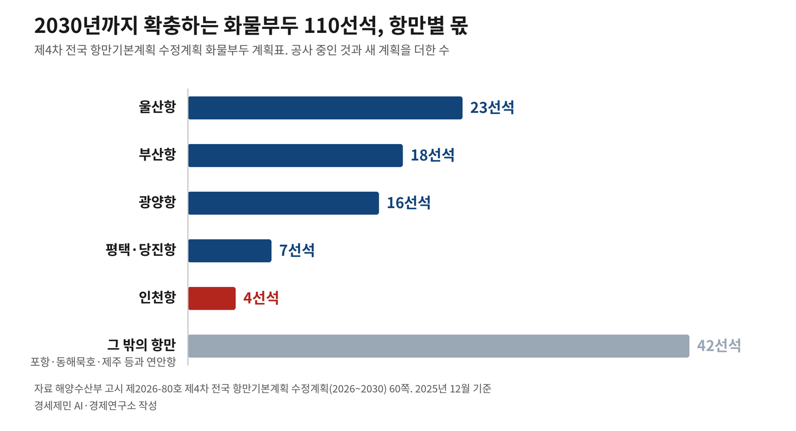
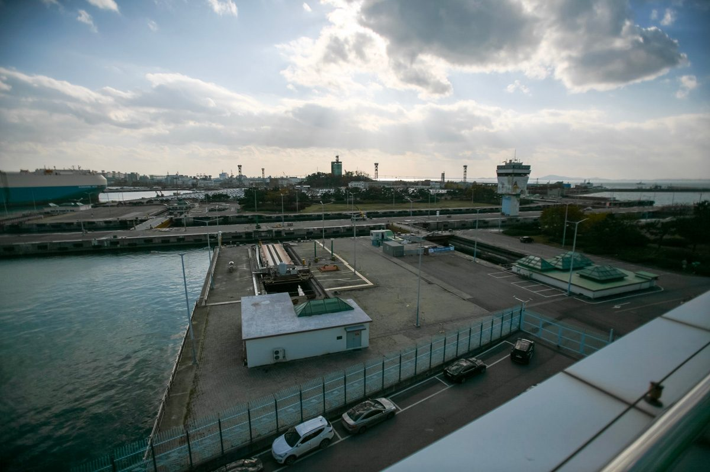
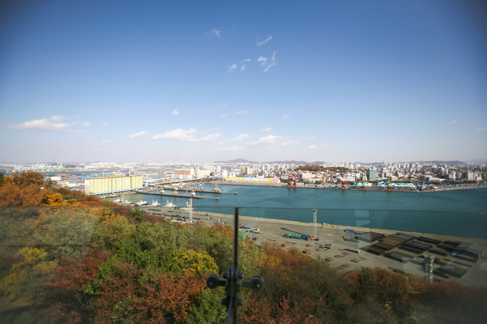
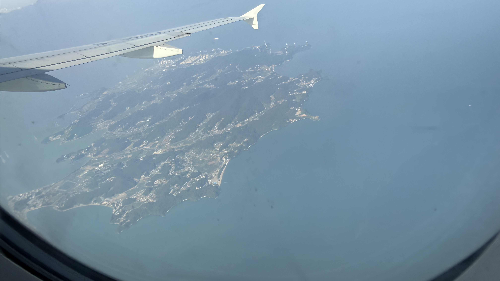
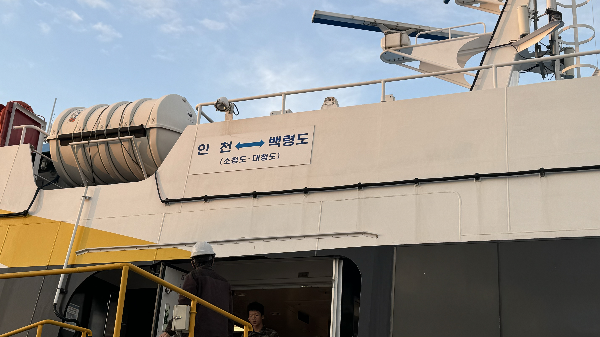
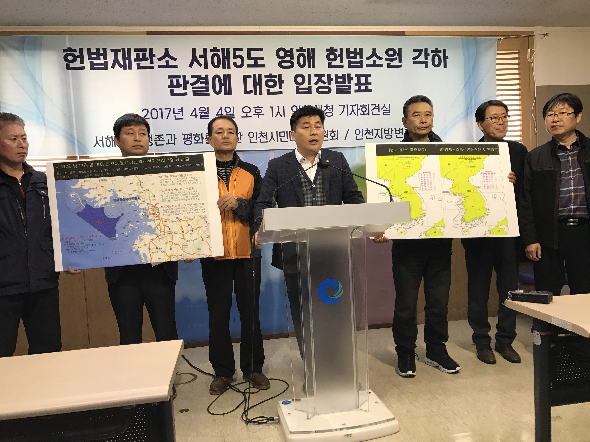

인천해양주권15편
바다 경계와 항만공사, 해양수도권을 다시 묻는다

해양 AI 융복합11편
항만의 인공지능 전환 — SeaAir·피지컬 AI·자율운항

인천 해양산업, 생존의 기로25편
[인천 해양산업, 생존의 기로㉔] 6.3 선거 일주일 앞, 인천 해양 자치권 시험대
인천해양주권15편

[인천해양주권⑫] 7월엔 '권역별 특화', 9월엔 '같은 기능'부산항은 환적 57%, 인천항은 정기항로 열에 아홉이 중국·동남아26.10.06- [인천해양주권⑪] 부산은 해양수도 완성, 인천은 해수부 예산안에 사업이 없다2027년도 국비 증가율, 정부 12.8% 해수부 10.8% 인천 9.5%26.09.23
 [인천해양주권⑩] 부산은 409억, 인천은 진흥원 용역비 5억도 못 받아부산 해양과학기술 산학연 협력센터, 9월 14일 개소26.09.22
[인천해양주권⑩] 부산은 409억, 인천은 진흥원 용역비 5억도 못 받아부산 해양과학기술 산학연 협력센터, 9월 14일 개소26.09.22
[인천해양주권⑨] 7월에 맡기고 9월에 없앤다, 인천 해상풍력 부두해양수산부 7월 20일 고시, 21조4000억원 가운데 13조1000억원은 항만공사 등 몫26.09.21 [인천해양주권⑥] 이재명 정부 항만공사 통합, 부산항 빚 4조4121억원 인천에 전가인천항만공사 21년 만에 부산 본사 '인천지역지사'로 격하26.09.08
[인천해양주권⑥] 이재명 정부 항만공사 통합, 부산항 빚 4조4121억원 인천에 전가인천항만공사 21년 만에 부산 본사 '인천지역지사'로 격하26.09.08- [인천해양주권⑤] LH 분리 PA 통합 '원칙 없는 행정'... 지지율은 최저 기록비대화 막는다며 LH 기능 쪼개고 20년 독립채산 항만공사는 강제 단일화26.09.05

[인천해양주권④] 김대중 구상 노무현 설립 지역항만공사, 이재명 정부가 걷어차1999년 국무회의가 붙인 이름은 '항만자치공사', 27년 뒤 지사로 전락26.09.04
[인천해양주권①] 인천 섬 197개 확정, 남은 것은 바다 경계다시도 간 해상경계 미획정, 골재와 어업권과 해상풍력 갈등 되풀이26.09.01
[인천해양주권②] 서해 영해기점 마지막은 인천 섬 소령도, 그 위는 확정된 선이 없다영해법 시행령 직선기선 기점 23개, 서북 끝이 옹진군 덕적면 소령도26.09.01
[인천해양주권③] 남북 경계 미확정이 중국에 틈을 준다북·중은 압록강 하구 영해선만 그어, 배타적경제수역은 미획정26.09.01- [인천해양주권⑮] 인천항 투자 65% 줄 때 부산항은 84% 늘었다부산은 환적 57%, 인천은 수출 66%가 중국행…7월 계획도 두 항을 갈라 적었다26.10.27
- [인천해양주권⑭] 항만공사 통합에 기업청산만 바라보는 인천진해·광양은 본사 유치 나서…인천시는 '실익부터'26.10.21
- [인천해양주권⑬] 효과 분석 없는 항만공사 통합, 해법은 협력과 분권발표 12분 전 '공식 입장 없음'…국감선 '결정된 부분'26.10.12
- [인천해양주권⑦] 민주당 인천 국회의원 12명 또 침묵 방관해수부 부산 이전 방관, 인천항만공사 폐지 방관, 진흥원 용역비 5억원 방관26.09.11
- [인천해양주권⑧] 인천 민주당 12명, 성명도 없고 법안도 없다철회 성명에 이름 올린 24명, 인천 몫은 배준영과 윤상현 둘26.09.17
해양 AI 융복합11편
- [해양 AI 융복합⑨] 미 해군 함정 고치는 한국 조선소, AI 정비 앞에 놓인 군 데이터 빗장미 구축함 수명 4분의 1이 정비 기간, 거제·울산에 든 미 군수지원함26.10.14
- [해양 AI 융복합⑧] 사람이 모자란 조선소, 데이터와 로봇으로 다시 짜는 건조 공정중국 지난해 세계 수주 63%, 숙련공 빈자리를 메우는 용접로봇과 데이터26.10.08
- [해양 AI 융복합⑦] 이미 바다에 뜬 배에 올라탄 AI, 항로·엔진·선내 안전까지해운협회가 꼽은 우선 분야, 최적항로·예측정비·선내 사고 예방26.09.23
- [해양 AI 융복합⑥] AI 완전자율운항선박, 2032년으로 옮겨 간 목표 연도2020년 정부가 걸었던 2025년 상용화, 여섯 해 만에 다시 짜는 레벨4 기술개발26.09.09
- [해양 AI 융복합⑤] 자율운항선박, 국제 규범이 배보다 먼저 왔다국제해사기구 첫 기준 7월 1일 발효, 강제 규정은 2032년 1월 1일이 목표26.08.26
- [해양 AI 융복합③] 부산항만공사, 국내 첫 'AI 항만' 전환 계획 내놨다2030년까지 8921억원 들여 38개 과제, 생산성 30% 향상 목표26.08.23
- [해양 AI 융복합④] 인천항 데이터센터, 네 번 밀린 착공 목표세계 데이터센터 전력소비 2030년 두 배 전망, 냉열과 해수 쥔 항만이 후보지로26.08.23
- [해양 AI 융복합②] 광양항, 정부 '피지컬 AI 항만' 첫 실증 거점 됐다정부, 2029년까지 7724억원 들여 광양항에 완전자동화 4선석26.08.03
- [해양 AI 융복합①] 공항 옆 인천항이 200㎞ 밖 군산항보다 늦는 까닭바닷길로 와서 하늘길로 나가는 화물, 인천항 점유율 평택에 밀려26.07.24
- [해양 AI 융복합⑩] 부두 하나서 효율 17% 올린 디지털 트윈, 부산항 전체로 넓히는 388억원 계획싱가포르 항만 가상 모형 2025년 가동, 한화오션은 선체까지 트윈으로26.10.16
- [해양 AI 융복합⑪] 2028년 완전자동화 부두 앞둔 인천 신항, 크레인은 중국산·운영 프로그램은 국산배에서 장치장까지 원격·무인, 안벽크레인·야드크레인·무인운반차 모두 중국 업체 몫26.10.24
인천 해양산업, 생존의 기로25편
- 인하대 해양전문대학원, 지금 만들면 된다로스쿨·물류대학원·해양학과 다 있는데 연결이 없다26.03.18
- [인천 해양산업, 생존의 기로⑦] 통합 국립해양대 인천캠퍼스 설립 경로협상·특별법 2가지 경로 동시에 밟아야26.03.18
- [인천해양산업, 생존기로⑪] 10조달러 경제권 관문, 전략도 기관도 없다일본·독일 GDP 넘는 초대형 경제권, 인천은 관문만 지킨다26.03.29
- [인천해양산업, 생존기로⑫] 남북교류 재개되면, 인천은 준비돼 있나인천-개성 70km, 대륙 관문 잠재력은 압도적... 전략 세울 연구기관이 없다26.03.31
- [인천해양산업, 생존기로⑫-하] 남북철도 미지수, 중국 항만을 활용하라경의선 폭파에 호르무즈 봉쇄까지, 인천항이 돌파구다26.04.02
- [인천해양산업, 생존기로⑬] 수산 R&D, 부산과 전남엔 있고 인천엔 없다부산엔 본원 320명, 여수엔 남해연구소, 인천엔 지역 연구소 하나26.04.03
- [인천해양산업, 생존기로⑭] 6.2GW 자체 전력으로 AI 데이터센터를 돌려라비수도권을 에너지 식민지로 만들지 말고, 인천 해상풍력으로 자급하라26.04.04
- [인천해양산업, 생존기로⑯] 유럽 3도시 30년, 타이중 10년… 인천해상풍력은 어떻게브레머하펜은 연구소를, 에스비에르는 항만을, 험버는 대학을, 타이중은 정부가 움직였다26.04.16
- [인천해양산업, 생존기로⑮] 서해안 HVDC 11.5조, 인천이 관문호남 출력제한 급증, 8GW 해저 송전망이 경인경제권과 충남을 잇는다26.04.16
- [인천해양산업, 생존기로⑱] 해양·항만·수산 융합 정책연구기관, 지금 당장해수부 R&D 6년 누적 부산 7213억 vs 인천 723억, 10배 격차가 출발선이다26.04.18
- [인천해양산업, 생존기로⑰] 항공우주산학융합원 9년, 해양도 할 수 있다8명으로 시작해 58명, 1637억원… 인하대·인천시·공항공사 3자 협력의 9년26.04.18
- [인천 해양산업, 생존의 기로⑲] 해수부, 인천 응답 '균형 네트워크' 용역 발주…과업 4에 지방해수청 조직 개편 포함부산 이전 4개월 만에 '지역 밀착·전국 균형' 연구 착수26.04.21
- [인천해양산업, 생존기로⑥] 인천 해양대, 법이 막고 해수부가 외면수도권정비계획법·글로컬대학·국립대 체계 삼중 장벽26.04.23
- [인천해양산업, 생존기로⑤] 경인경제권, 해양대학이 없다상하이·싱가포르·로테르담엔 다 있는데… 세계 주요 항만 도시 가운데 인천만 없다26.04.23
- [인천해양산업, 생존기로④] 해상풍력 O&M(운영과 정비)7GW 해상풍력 O&M, 25년간 33조시장…인천은 준비 없다26.04.23
- [인천 해양산업, 생존기로 ③] 7GW 배후항만, 10만평 되겠나... 에스비에르의 8분의 1인천신항 해상풍력 부두 확정됐지만 면적 턱없이 부족26.04.23
- [인천해양산업, 생존 기로 2] 해상풍력 53조 '무주공산'... 연구 인프라 전무인천 앞바다 7GW 단지에 터빈 수백 기 들어서는데26.04.23
- 부산 5조 vs 인천 0원… '해양 권력' 대이동해수부 부산 이전 완료, 연구기관·예산·인력 부산 집중26.04.23
- [인천해양산업, 생존기로㉑] 부산항 7부두 포트 4.0, 인천항도 피할 수 없다부산 제2신항 직접고용 288명, 운반·현장 직무 줄고 IT·안전 직무 늘어26.04.28
- [인천해양산업, 생존기로⑳] 70조원 선박 수리·개조 시장 열렸다, 인천은 거점 0개부산 영도, 수리조선 클러스터·KOMERI·미 해군 함정까지 다 잡았다26.04.28
- [인천해양산업, 기로⑩]한중열차페리,유럽 18일...중동우회인천-웨이하이-함부르크, 루트는 있는데 설계자가 없다26.04.28
- 부산엔 스마트양식 1950억·어시장 2422억, 인천엔 데이터 거점도 없다스마트양식 클러스터 부산·전남·강원·경북·제주 5개소 1950억원, 인천 부재26.05.07
- [인천해양산업, 생존기로㉓] 인천항 크루즈 1월 64항차서 3월 133항차, 모항 도시 전환 갈림길부산 420항차 환태평양·인천 130항차대 환황해 분업 구도, 모항 운영 선사 3→8개사26.05.18
- [인천 해양산업, 생존의 기로㉕·終] 2026년 가을 해수부 균형 네트워크 용역 결과 발표부산 4조8882억 vs 인천 920억, 6배 격차에서 시작된 시리즈의 종합26.05.27
- [인천 해양산업, 생존의 기로㉔] 6.3 선거 일주일 앞, 인천 해양 자치권 시험대제주는 이양받고 인천은 일반 광역시·국가 관리 무역항 이중 사각지대26.05.27